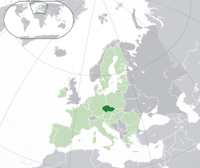

Hlavní město: Praha
Statní řizení: Parlamentni Republia
Uřední měna: Koruna
Rozloha: 78,871 km2
Popis země:
Česká republika je zemí s bohatou historií a malebnou krajinou. Je známá svými historickými památkami, jako je Pražský hrad a Karlův most. Česká kultura je plná tradičního folkloru, jako jsou lidové písně a tance. Města jako Praha, Brno a Český Krumlov lákají turisty svým architektonickým půvabem a atmosférou. Česká kuchyně nabízí lahodné pokrmy, jako je tradiční vepřo-knedlo-zelo. Země je rovněž známá svými pivními tradicemi, s mnoha malými pivovary a rozmanitými druhy piva. Česká republika je pro svou bohatou historii, kulturu a přírodu jedinečným cílem pro turisty.
